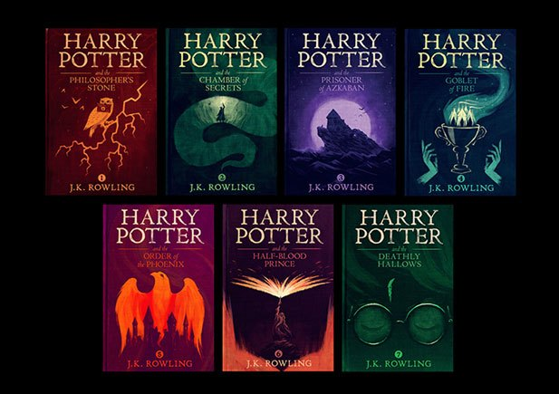
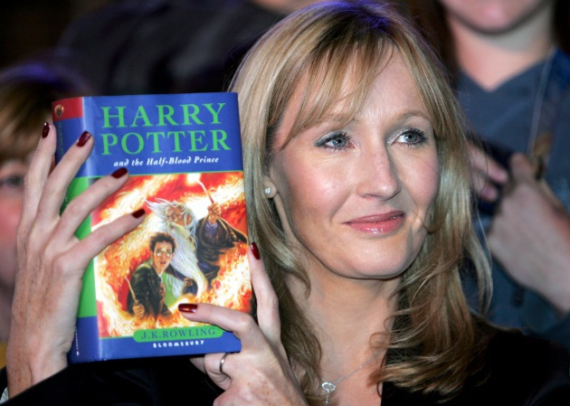
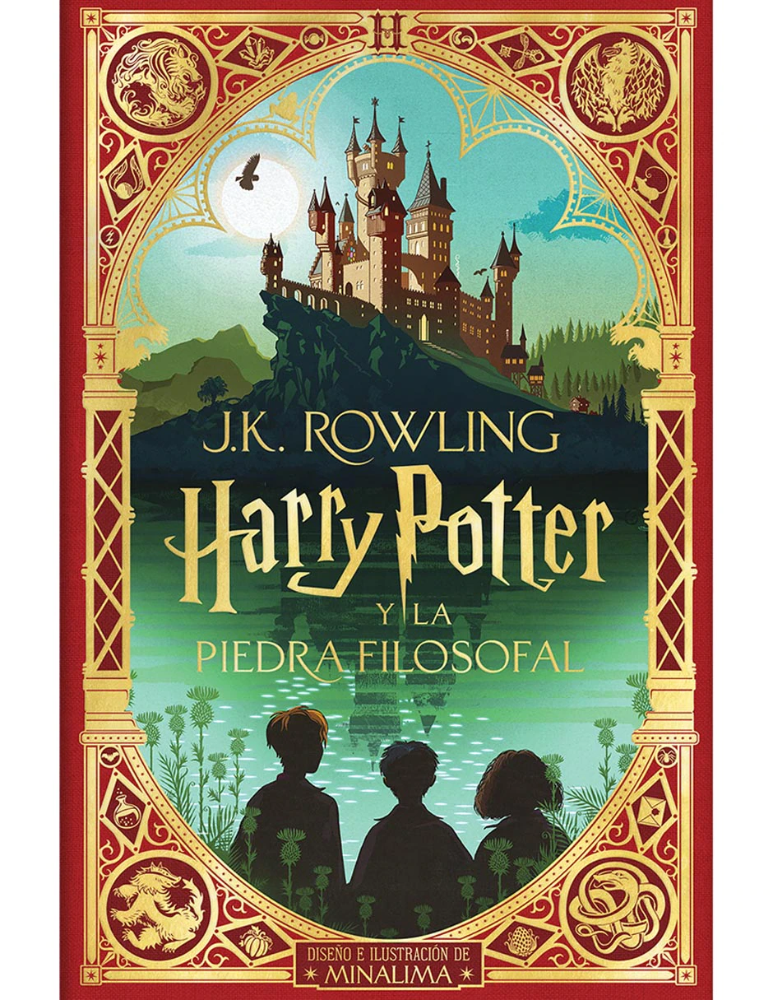
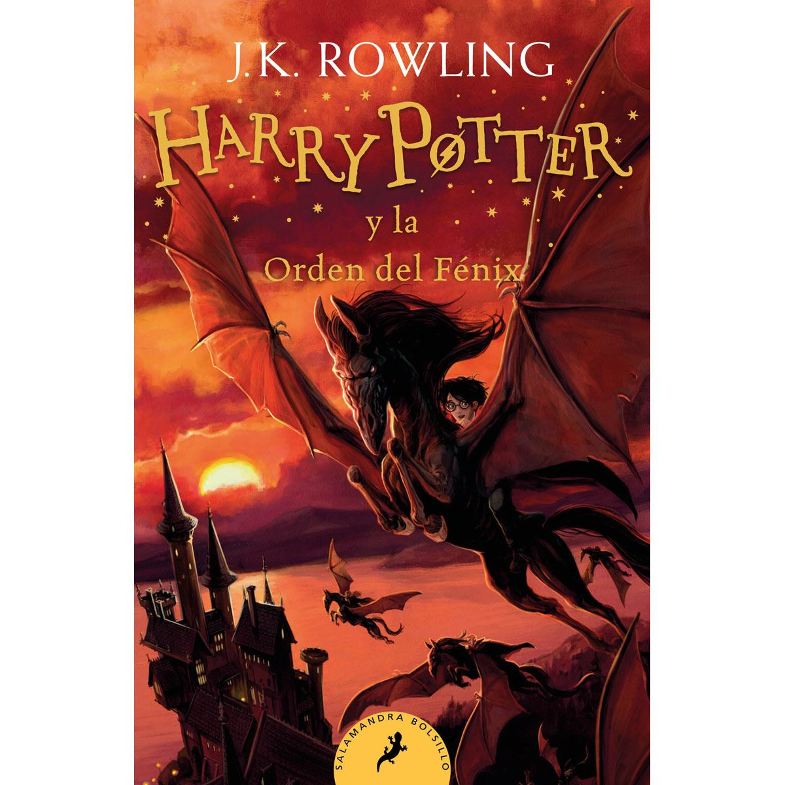
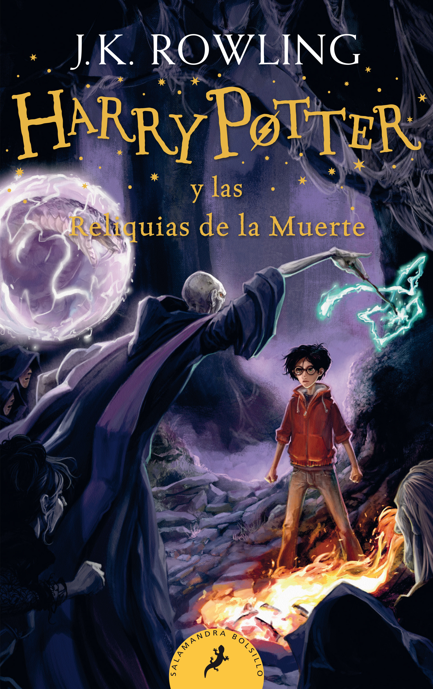
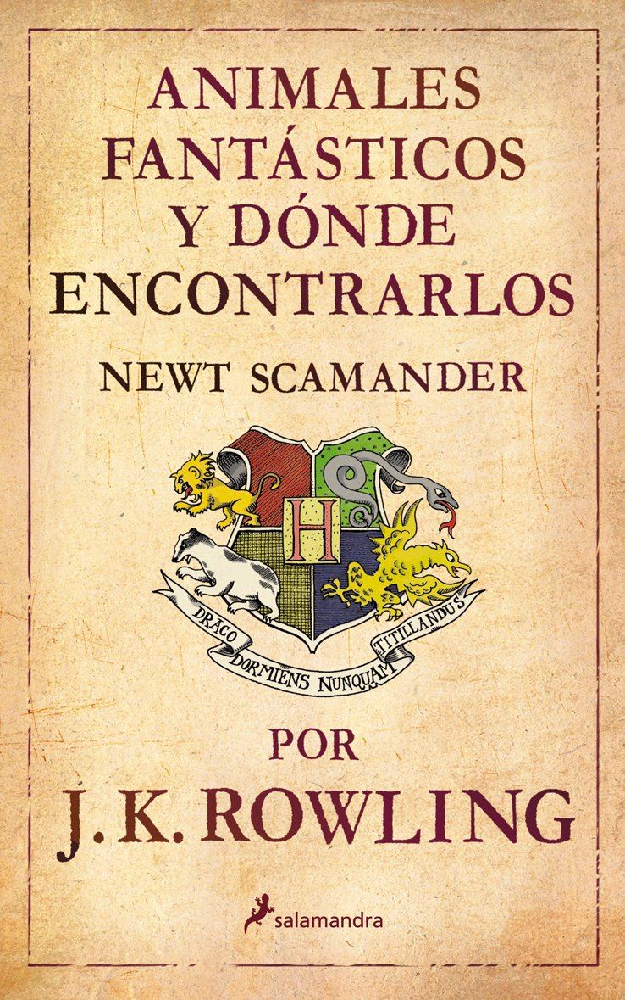

Sinopsis
Resumen del argumento
La historia comienza con la celebración del mundo mágico. Durante muchos años, había sido aterrorizado por el malvado mago lord Voldemort. La noche del 31 de octubre, mató a Lily y James Potter. Sin embargo, cuando intenta matar a su hijo de 1 año, Harry, la maldición asesina avada kedavra se vuelve sobre sí mismo. El cuerpo de Voldemort resulta destruido, pero él sobrevive: no está muerto ni vivo. Por su parte, a Harry solo le queda una cicatriz con forma de rayo en la frente que es el único remanente físico de la maldición de Voldemort. Harry es el único sobreviviente de la maldición asesina, y a raíz de la misteriosa derrota de Voldemort, el mundo mágico empieza a llamarlo como «el niño que sobrevivió».
El 1 de noviembre, Rubeus Hagrid, un semi-gigante, deja a Harry con los únicos parientes que le quedan, los crueles Dursley. Estos son su tío Vernon, su tía Petunia y Dudley, su primo malcriado. Ellos intentarán en vano esconder su herencia mágica (por ejemplo, al decirle que sus padres murieron en un accidente de tráfico, o castigándolo severamente después de cualquier comportamiento extraño). Sin embargo, la víspera de su undécimo cumpleaños, Harry tiene su primer contacto con el mundo mágico cuando recibe cartas del Colegio Hogwarts de Magia y Hechicería, las cuales eran entregadas por lechuzas, aunque su tío impide que pueda leerlas. Ya en su cumpleaños, Hagrid aparece y le dice a Harry que existe un mundo mágico y otro «muggle», puesto que él es un mago, ha sido invitado a asistir al colegio.
Universo
Al contrario que en novelas como las de Las Crónicas de Narnia, en las que se trata un universo alternativo, o El Señor de los Anillos, donde la «Tierra Media» se trata de un pasado ficticio, el mundo mágico de las novelas de Harry Potter es un universo paralelo al nuestro y contiene diversos elementos mágicos análogos a cosas del mundo no mágico o muggle. Este universo mágico tiene una organización política para cada Estado; en el caso del Reino Unido, donde se desarrolla la mayor parte de la acción, la máxima institución es el Ministerio de Magia. Existe un «Estatuto Internacional del Secreto» que obliga a todos los magos y brujas del mundo a mantener en secreto para los muggles la existencia del mundo mágico.
La capacidad de hacer magia, según las novelas, es innata más que aprendida, aunque los jóvenes magos deben asistir a escuelas con el fin de dominarla y controlarla. Esta capacidad es totalmente hereditaria, aunque existan magos hijos de muggles (o «sangre sucia» de forma despectiva) pues estos siempre debieron tener un ascendente mago; también es posible que existan hijos de magos sin alguna capacidad mágica. A estos últimos se los llama «squibs». Los magos tienen un desarrollado sistema social, con su propia moneda, sanidad y una compleja red de transportes y comunicaciones.
Dentro del mundo mágico, coexisten con los magos otras criaturas que también son mantenidas en secreto y fuera de contacto con los muggles. Entre ellas se encuentran dragones, fantasmas, unicornios, sirenas, centauros y otras inventadas o adaptadas por la autora como los dementores o los elfos domésticos.

Cronología
Los libros evitan ubicar la historia en algún año en particular, sin embargo hay un par de referencias que permiten establecer una línea de tiempo con años reales. La primera se da en la segunda novela, Harry Potter y la cámara secreta, en la que el fantasma Nick Casi Decapitado celebra el 500º aniversario de su muerte, que ocurrió el 31 de octubre de 1492, por lo tanto, el libro se ubica en el ciclo lectivo de 1992 a 1993. Esta cronología se reitera en Harry Potter y las reliquias de la Muerte, cuando se indica que la muerte de James y Lily Potter ocurrió el 31 de octubre de 1981. Estos datos permiten deducir que el argumento de la historia transcurre desde 1981, cuando Dumbledore entrega a Harry a sus tíos al comienzo de La piedra filosofal, hasta 1998, al final de Las reliquias de la Muerte.
Novelas
Harry Potter y la piedra filosofal
Harry Potter y la piedra filosofal (Harry Potter and the Philosopher's Stone) es el primer libro de la serie, fue publicado en Reino Unido el 26 de junio de 1997 y en español en marzo de 1999.Se trata de uno de los libros más vendidos de la historia, las estimaciones de sus ventas mundiales superan los 110 millones de copias. En la primavera de 2007, una primera edición firmada por Rowling fue subastada en Londres por 27 876 libras esterlinas.

En esta primera obra se introducen la mayoría de los personajes principales de la serie, así como muchos de los lugares donde se desarrollará la acción. Se narran los primeros pasos de Harry en el mundo de la magia, así como su primer enfrentamiento con Voldemort, quien en su búsqueda de la inmortalidad quiere obtener el poder de la piedra filosofal.
Harry Potter y la cámara secreta
 Harry Potter y la cámara secreta (Harry Potter and the Chamber of Secrets) fue publicado originalmente el 2 de julio de 1998, y en español en octubre de 1999. Muchos de los elementos del primer boceto de este libro fueron eliminados tanto por su autora como por el editor. Además, el libro tiene una importante relación temática con el sexto libro. Mucha de la información que iba a ser revelada en este tomo fue desplazada a la sexta entrega. Como consecuencia de esto, muchos de los elementos que aparecen en una forma cotidiana en La cámara secreta aparecen nuevamente en El misterio del príncipe con su verdadera relevancia.
Harry Potter y la cámara secreta (Harry Potter and the Chamber of Secrets) fue publicado originalmente el 2 de julio de 1998, y en español en octubre de 1999. Muchos de los elementos del primer boceto de este libro fueron eliminados tanto por su autora como por el editor. Además, el libro tiene una importante relación temática con el sexto libro. Mucha de la información que iba a ser revelada en este tomo fue desplazada a la sexta entrega. Como consecuencia de esto, muchos de los elementos que aparecen en una forma cotidiana en La cámara secreta aparecen nuevamente en El misterio del príncipe con su verdadera relevancia.
El libro relata el segundo año de Harry en Hogwarts. Un día un elfo llamado Dobby vino a casa de Harry para avisarle de que Hogwarts corría un grave peligro. Más tarde su amigo Ron, le recogerá en un coche volador y así empieza su curso en Hogwarts durante el cual aparecen mensajes en las paredes de los pasillos de la escuela que advierten que la Cámara de los Secretos ha sido abierta, seguidos de una serie de ataques a alumnos que no provienen de familias con sangre mágica. En esta entrega introducen la figura del elfo doméstico y personajes relevantes para el resto de la serie, como Lucius Malfoy, Ginny Weasley y Arthur Weasley, además de revelar un poco más del pasado de Voldemort a través de su diario personal.
Harry Potter y el prisionero de Azkaban

Harry Potter y el prisionero de Azkaban (Harry Potter and the Prisoner of Azkaban) fue publicado en inglés el 8 de julio de 1999, mientras que en español lo hizo en abril de 2000. Este fue el libro que más rápido escribió Rowling, pues lo terminó en tan solo un año después de comenzar a escribirlo. Fue además acreedor del Premio Costa y del Premio Bram Stoker, entre otros, que lo ubican como uno de los libros fantásticos más laureados de los últimos años.
En esta oportunidad se introducen la figura del dementor y los personajes de Remus Lupin y Sirius Black, quien al inicio de la novela escapa de la prisión de Azkaban, además de desarrollar la historia de los padres de Harry. Es el único libro de la serie en el que no aparece Voldemort.
Harry Potter y el cáliz de fuego
Harry Potter y el cáliz de fuego (Harry Potter and the Goblet of Fire) fue publicado en inglés el 8 de julio de 2000 y en español en marzo de 2001.El tamaño del libro incrementó considerablemente respecto a los primeros tres, una idea de la que Rowling estaba al tanto desde la concepción de la novela. El título atravesó diversas modificaciones, entre las cuales se incluyeron Harry Potter y el Torneo Doomspeell, Harry Potter y el Torneo de los tres magos, hasta que la autora se inclinó por El cáliz de fuego pues recordaba al concepto de la «copa del destino», que de acuerdo a ella era el tema del libro.La novela fue ganadora del Premio Hugo a la mejor novela en 2001.
En esta ocasión, se narra el cuarto año de Harry en Hogwarts y el misterio que rodea el ingreso involuntario de su nombre en el Torneo de los Tres Magos, en el cual es obligado a competir junto a otros tres participantes. La historia explora más a fondo el mundo mágico y termina con el resurgimiento de lord Voldemort. Previo a la publicación del libro, se generó mucha controversia y anticipación ante el anuncio de la autora de que un personaje moriría.
Harry Potter y la Orden del Fénix
Harry Potter y la Orden del Fénix (Harry Potter and the Order of the Phoenix) es con casi 900 páginas en su edición inglesa el libro más largo de la serie, un hecho que la propia autora considera un defecto.Fue publicado mundialmente en inglés el 21 de junio de 2003, y en español el 21 de febrero de 2004.La edición en español a cargo de Salamandra constó de tres versiones: una para España, otra para el cono sur y otra para Colombia, México y Estados Unidos. Esta distinción se hizo para respetar algunas particularidades del lenguaje regional.Su tirada inicial en español fue de 1 100 000 copias.

En el quinto libro, Harry Potter debe enfrentarse tanto a un Voldemort resurgido como al resto del mundo mágico que se niega a creer que esto es cierto, empezando por el Ministerio de Magia. Este nombra a Dolores Umbridge como la nueva directora de Hogwarts, y junto con Luna Lovegood y Bellatrix Lestrange son los tres personajes más destacados que se introducen en esta entrega. Por otro lado, se revela una importante profecía que concierne a Harry y a Voldemort.
Harry Potter y el misterio del príncipe
Harry Potter y el misterio del príncipe (Harry Potter and the Half-Blood Prince) fue publicado en inglés el 16 de julio de 2005 y fue presentado por Rowling en una rueda de prensa reservada solo a niños entre 8 y 16 años. Por su parte, en español fue publicado el 23 de febrero de 2006, con una tirada inicial de un millón de ejemplares.Casi un año antes de su publicación original, Rowling había manifestado en su sitio web oficial su voluntad de matar a otro personaje, por lo que se sucedieron una serie de apuestas no oficiales en las que se barajaron las posibilidades.
En esta sexta entrega, Harry se topa con un antiguo libro de texto de pociones lleno de anotaciones y recomendaciones firmadas por un misterioso príncipe. Al mismo tiempo, recibe clases particulares por el propio director del colegio, Albus Dumbledore, que le hace conocer momentos del pasado de Voldemort, para así enseñarle lo que son los horrocruxes, objetos elementales para lograr su victoria. Al final del libro, el profesor Severus Snape, cuya lealtad estuvo en duda durante toda la serie, asesina a Dumbledore. La frase Snape kills Dumbledore (Snape mata a Dumbledore) se convirtió en un fenómeno de internet que impulsó todo tipo de videos y gráficos.
Harry Potter y las reliquias de la Muerte

La séptima novela, Harry Potter y las reliquias de la Muerte (Harry Potter and the Deathly Hallows), fue publicada en inglés el 21 de julio de 2007, cerrando la serie que duró una década. En español fue publicado el 21 de febrero de 2008, con una tirada inicial de un millón y medio de ejemplares. El libro batió récords de venta, con más de 11 millones de copias vendidas en sus primeras 48 horas, solo en el Reino Unido y Estados Unidos. La marca anterior la tenía El misterio del príncipe.
Esta última novela narra los acontecimientos que siguen directamente a la muerte de Dumbledore, en los que Voldemort finaliza su ascenso al poder y logra dominar el Ministerio de Magia. Harry y sus amigos deciden no asistir a su último año en Hogwarts, para salir en la búsqueda de los horrocruxes restantes. Finalmente, se lleva a cabo la batalla de Hogwarts, entre la Orden del Fénix, alumnos y profesores del colegio, por un lado, y Voldemort y los Mortífagos, por el otro. La novela finaliza con un epílogo que cuenta el futuro de los personajes supervivientes 19 años después del enfrentamiento, mostrando que cada uno de ellos ha formado sus vidas.
El 23 de octubre de 2015, J. K. Rowling anunció una octava parte de la saga.
Harry Potter y el legado maldito
La octava entrega de la serie de Harry Potter (que está dividida en dos partes) se publicó el 31 de julio de 2016. No es una novela como las anteriores, sino sencillamente el guion utilizado en la obra de teatro sobre el mismo, la cual se estrenó el 30 de julio de 2016.
Otras publicaciones
Adicionalmente, Rowling escribió seis libros secundarios que se ubican dentro del universo argumental de las ocho novelas principales. Todos se escribieron con un carácter benéfico, dado que sus recaudaciones fueron donadas a las entidades Comic Relief y The Children's Voice.
Animales fantásticos y dónde encontrarlos

Animales fantásticos y dónde encontrarlos (en inglés, Fantastic Beasts and Where to Find Them) es un libro de texto usado por los estudiantes de Hogwarts, escrito en la ficción por Newt Scamander, un afamado mago biólogo. Describe y analiza las distintas criaturas mágicas que habitan en el mundo. Fue publicado el 5 de marzo de 2001, con un diseño que representa a la copia usada por Harry Potter en El prisionero de Azkaban. Incluye además algunas notas al margen hechas supuestamente por los tres protagonistas. El 12 de septiembre de 2013 Warner Bros. anunció que se estaba preparando una película basada en este libro con el guion de J. K. Rowling. El 15 de octubre de 2014 se hizo oficial que el actor Eddie Redmayne encarnaría el papel principal de la película. Warner Bros anunció que Animales fantásticos y dónde encontrarlos sería una pentalogía que se estrenaría en 2016, 2018, 2020, 2022 y 2024.
Quidditch a través de los tiempos
Quidditch a través de los tiempos (en inglés, Quidditch Through the Ages) fue publicado en forma conjunta con el anterior, y persiguió los mismos fines benéficos. En este caso, se trata de un manual sobre las reglas y la historia del quidditch, el deporte más popular entre los magos. Aunque en la serie aparece como un regalo de Navidad de Hermione a Harry, el libro está diseñado como un ejemplar de la biblioteca de Hogwarts, con un aspecto algo ajado y con una pegatina que detalla los alumnos que han solicitado su préstamo anteriormente.
Los cuentos de Beedle el Bardo
Por su parte, Los cuentos de Beedle el Bardo (The Tales of Beedle the Bard) fue escrito a finales de 2007 como una «despedida de la serie» por parte de la autora.Solo se hicieron siete copias manuscritas e ilustradas por Rowling, de las cuales seis fueron regaladas y una fue subastada en Londres. La subasta se llevó a cabo en la casa Sotheby's de la ciudad, y el libro fue comprado por Amazon.com por un precio de 1 950 000 libras esterlinas.Todas las copias, de 157 páginas, están forradas en cuero marroquí con ornamentos de plata e incrustaciones de piedras semi preciosas.
Según la serie, Beedle el Bardo es al ficticio mundo mágico, lo que los hermanos Grimm o Hans Christian Andersen son al mundo real. Sus cuentos son conocidos popularmente entre los niños magos como lo son Cenicienta o Blancanieves entre los muggles. Una recopilación de estas historias, escrita en runas antiguas, aparece en el último libro de la heptalogía como una herencia de Albus Dumbledore a Hermione Granger y tiene un papel fundamental en el desarrollo del argumento.
Hogwarts: la guía incompleta y poco fiable
Short Stories from Hogwarts of Heroism, Hardship and Dangerous Hobbies
Short Stories from Hogwarts of Power, Politics and Pesky Poltergeist
Protagonistas
- Harry Potter es el protagonista principal y quien da título a la serie. Es un niño huérfano que vive con sus crueles tíos hasta que en su undécimo cumpleaños se entera de que es un mago y averigua que cuando tenía un año, lord Voldemort asesinó a sus padres, y cuando quiso hacer lo mismo con él, la maldición asesina se volvió sobre sí mismo, haciéndolo desaparecer, mientras que a Harry solo le quedó una cicatriz en la frente con forma de rayo. Posteriormente, descubre que su destino está ligado al de Voldemort, y que debe ser él quien evite el resurgimiento del «Señor Oscuro».
- Ron Weasley es el mejor amigo de Harry Potter y, junto con Hermione Granger, uno de sus compañeros de aventuras. Aparece descrito como un chico alto y pelirrojo, que junto con sus padres y hermanos (que también tienen un papel importante en la serie) viven en «la Madriguera». Ron vive a la sombra de sus cinco hermanos mayores, además de la del propio Harry, lo cual ha generado varias discusiones entre ambos a lo largo de la serie.
- Hermione Granger compone junto con Harry y Ron el trío de protagonistas. Aunque en los primeros libros su papel es minoritario en comparación al de los dos chicos, a partir de El prisionero de Azkaban el desarrollo de su personaje crece y sus habilidades son cada vez más requeridas. Hermione es muy inteligente y estudiosa, y siempre antepone la lógica y el pensamiento frío ante la valentía de sus compañeros. A partir del cuarto libro expone implícitamente sus sentimientos hacia Ron, los cuales no se aclararán hasta la última entrega.
- Ginny Weasley es la más joven de los hermanos Weasley. Aparece por primera vez en La piedra filosofal, en donde aparece cuando Harry y cuatro de sus hermanos se van a Hogwarts, y cuando ella ve emocionada a Harry al regresar a fin del año escolar. Al principio Ginny tiene poca presencia pero conforme la saga avanza su personaje va cogiendo fuerza.
- Neville Longbottom es un estudiante de Gryffindor de sangre pura en el año de Harry. A lo largo de la serie, es normalmente mostrado como un personaje torpe y desorganizado y un estudiante bastante mediocre, aunque es muy talentoso en Herbología. Se conoce más adelante que en la profecía que Voldemort escucha y por la cual decide asesinar a Harry, también encajaba Neville.
- Albus Dumbledore es el director de Hogwarts. Es considerado como uno de los magos más poderosos de su tiempo y uno de los principales mentores de Harry. Los libros suelen acabar con una conversación entre Harry y Dumbledore en las que este último revela detalles de las incógnitas que surgen en la trama. En el sexto libro da clases particulares a Harry, enseñándole sobre los horrocruxes. Al final de esta novela, es asesinado por Severus Snape, dejando al mundo mágico a merced del segundo levantamiento de Voldemort.
Antagonistas
- Voldemort, el antagonista de la serie, es un mago oscuro y malvado que quiere dominar el mundo mágico para imponer su ideología basada en la prevalencia de la sangre pura y eliminar a los muggles. Su verdadero nombre es Tom Marvolo Riddle (en algunas versiones en español es traducido como Tom Sorvolo Ryddle) y aparece descrito como un ser pálido y alto, con rendijas en vez de nariz y ojos rojos con pupilas verticales. Aunque fue un ejemplar alumno de Hogwarts, dedicó su vida a las artes oscuras, y en su ufana búsqueda de la inmortalidad, desarrolló siete horrocruxes, depositando un trozo de su alma en cada uno de ellos. Después de graduarse de Hogwarts, y junto con sus seguidores, los mortífagos, inició una época de terror en el mundo mágico. Tras escuchar una profecía en la que se auguraba el nacimiento de un rival, intentó matar a Harry, pero no tuvo éxito y casi murió. Logró reconstruir su cuerpo en el cuarto libro y llegó al poder nuevamente tras la muerte de Dumbledore.
- Los mortífagos son los fieles seguidores de lord Voldemort. Son quienes llevan a cabo las misiones que su amo les encarga y le deben obediencia ciega, hasta el grado de anteponer su lealtad por encima de su propia familia.
Recordamos que estas son las novelas si quiere saber sobre las peliculas vaya aqui